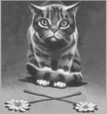

Lời Mở Đầu

ước từng bước một, những con mèo len lỏi trong hang động. Bộ lông của họ dính những vệt bùn và đôi mắt mở to sợ hãi, phản chiếu lại ánh trăng lạnh đang chiếu xuống xuyên qua vết nứt trên trần hang. Họ hạ thấp mình với cái bụng quệt sát mặt đất, đôi mắt hấp háy nhìn hết từ bên này sang bên kia, như thể có nguy hiểm đang rình rập họ trong bóng tối.

Ánh trăng le lói chiếu xuống hồ nước trên nền hang. Soi rọi những tảng đá nhọn từ mặt đất lên tới trên trần. Vài hòn đá trắng chen giữa mấy thân cây mảnh. Gió thổi tung bộ lông của mấy mèo. Không khí có mùi ẩm ướt và trong lành, đầy tiếng gầm rú xa xôi của những con sóng nước.
Một mèo bước ra từ phía sau tảng đá. Thân mình ông dài, gầy, với cơ bắp cuồn cuộn, và bộ lông phủ đầy bùn khô, trông ông như một con mèo đá.
“Chào mừng tất cả các mèo,” ông cao giọng meo. “Ánh trăng nằm trên mặt nước. Đây là thời gian để Nói, theo luật của Bộ lạc săn bắt vĩnh hằng (bộ lạc săn bắt vĩnh hằng cũng tương tự như bộ tộc Sao, nhưng là tổ tiên của những mèo đến từ các bộ lạc sống ở trên núi, mà không phải từ các bộ tộc ở trong rừng – ND).”
Một mèo bước tới, cúi đầu trước con mèo đầy bùn. “Đá Nứt (là mèo lang y của bộ lạc Nước Đổ - ND), ông có dấu hiệu nào không? Bộ lạc săn bắt vĩnh hằng đã nói chuyện với ông rồi chứ?”
Một mèo khác lên tiếng từ phía sau. “Có hy vọng cuối cùng nào không?”
Đá Nứt cúi đầu. “Ta đã nhìn thấy những gì bộ lạc săn bắt vĩnh hằng muốn nói trong ánh trăng trên tảng đá, trong bóng tối của những viên sỏi, trong âm thanh của những giọt mưa trên trần hang động.” Ông dừng lại, đưa mắt nhìn tất cả mọi mèo xung quanh. “Có,” ông tiếp. “Họ nói với ta là có hy vọng.”
Một tiếng thì thầm yếu ớt, như tiếng xào xạc của lá trong gió, xuyên qua nhóm mèo. Mắt họ như mở to hơn, và tai họ căng ra. Một trong những đứng ở phía trước ngập ngừng lên tiếng. “Rồi ông có biết là chúng ta sẽ thoát khỏi mối họa khủng khiếp này như thế nào không?”
“Có, Vách Đá,” Đá Nứt trả lời. “Bộ lạc săn mồi vĩnh hằng có hứa với tôi sẽ đưa một mèo đến, một mèo màu bạc không sinh ra trong bộ lạc này, mèo sẽ giúp chúng ta thoát khỏi Sư tử núi một lần và mãi mãi.”
Im lặng một lúc, thì: “Có những mèo khác, không ở trong bộ lạc Nước Đổ sao?” một câu hỏi phát ra từ phía sau nhóm mèo.
“Phải có,” mèo khác trả lời.
“Tôi đã nghe nói về những kẻ xa lạ,” Vách Đá meo, “mặc dù chúng ta chưa bao giờ thấy họ trong cuộc đời mình. Nhưng khi nào mèo bạc sẽ đến?” ông tuyệt vọng thêm, tiếng meo càng lúc càng lớn xung quanh ông.
“Đúng rồi, là khi nào vậy?”
“Liệu chuyện đó có thật không?”
Đá Nứt giật giật đuôi ra hiệu cho mọi mèo im lặng.
“Đúng, đó là sự thật,” ông meo. “Bộ lạc săn bắt vĩnh hằng không bao giờ nói dối chúng ta. Tôi đã nhìn thấy bộ lông màu bạc lấp lánh, trong một hồ nước dưới ánh trăng.”
“Nhưng khi nào?” Vách Đá cố chấp.
“Bộ lạc săn bắt vĩnh hằng không cho tôi biết điều đó,” Đá Nứt trả lời. “Tôi không biết khi nào thì con mèo bạc đến, hay đến từ đâu, nhưng chúng ta biết là nó sẽ đến.”
Ông ngước đầu lên nhìn trần hang động, đôi mắt sáng rực như hai vầng trăng nhỏ. “Cho đến khi những mèo đó đến bộ lạc của chúng ta, chúng ta chỉ có thể chờ đợi.”